The idea comes from Jan Homann, who uploaded a picture of the Riemann Zeta function to Wikipedia.
ComplexGraph[f_, xmin_, xmax_, ymin_, ymax_, points_:100] :=
(* f is the complex function to be graphed
in the region[xmin, xmax] × [ymin, ymax] .
The parameter points controls how many points will be
sampled in each direction; good values are 100 - 500. *)
RegionPlot[True, {x, xmin, xmax}, {y, ymin, ymax},
ColorFunction → Function[
{x, y}, Hue[Mod[Arg[f[x + I * y]], 2Pi]/(2Pi),
1/(1 + 0.3 Log[Abs[f[x + I * y]] + 1]),
1 - 1/(1.1 + 5Log[Abs[f[x + I * y]] + 1])]],
ColorFunctionScaling → False,
AspectRatio → Automatic,
PlotPoints → points]
The following is the color function used for all our examples. The argument of a complex value is encoded by the hue of a color (red = positive real, and then counterclockwise through yellow, green, cyan, blue and purple; cyan stands for negative real). Strong colors denote points close to the origin, black = 0, weak colors denote points with large absolute value, white = ∞.
ComplexGraph[Function[z, z], -50, 50, -50, 50, 100]
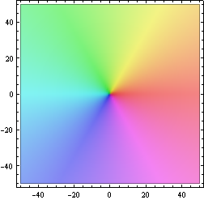
Here is a picture of f(z) = z^3. The color of the point z encodes the value f(z) according to the above color function:
ComplexGraph[Function[z, z^3], -10, 10, -10, 10, 200]
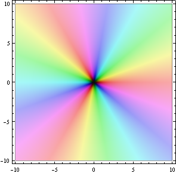
A fifth-degree polynomial, with three zeros of order 1 and one zero of order 2:
ComplexGraph[Function[z, z (z - I) (z - 3) (z
- 1 + I)^2], -5, 5, -5, 5, 200]
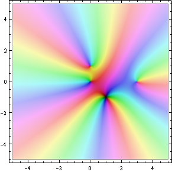
The sine-function. Note that it is periodic in x-direction, but growing in positive and negative y-direction. As expected, only red and cyan on the real axis. Also note that in the upper half plane the order of the colors is reversed compared to the lower half-plane. Who knew? Well I guess it follows from the fact that the Taylor coefficients of sin(z) are all real, and so sin(z)=sin(z).
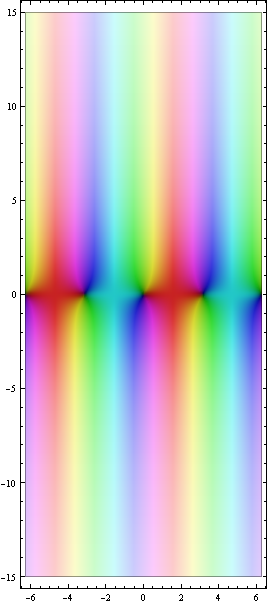
The exponential function. Nice and periodic in y-direction, growing in x-direction:
ComplexGraph[Exp, -10, 10, -10, 10, 200]
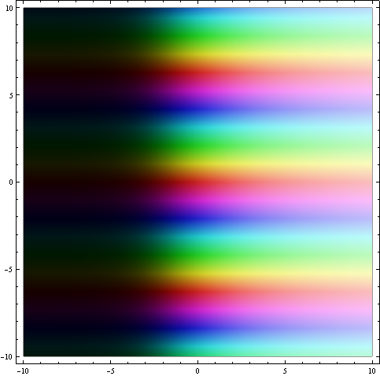
The logarithm near the interesting spots z=0 (pole) and z=1 (zero).
ComplexGraph[Log, -2, 2, -2, 2, 200]
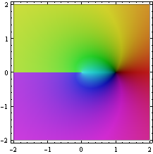
The clearly visible branch cut on the negative real axis is an artifact; the natural domain of the logarithm is its Riemann surface:
ParametricPlot3D[{r * Cos[theta], r * Sin[theta], theta/3},
{theta, -3Pi, 3Pi}, {r, 0, 4}, PlotPoints → 100, Mesh → None,
ColorFunctionScaling → False,
ColorFunction → Function[
{x, y, z, theta, r}, Hue[
Mod[Arg[I * theta + Log[r]], 2Pi]/(2Pi),
1/(1 + 0.3 Log[Abs[I * theta + Log[r]] + 1]),
1 - 1/(1.1 + 5Log[Abs[I * theta + Log[r]] + 1])]]]
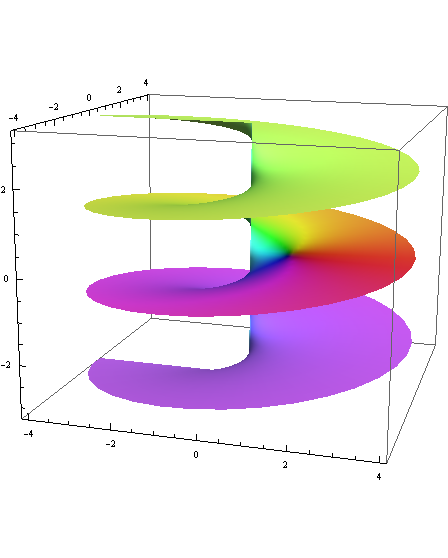
Here's the graph of the square-root function on its natural domain:
ParametricPlot3D[{r * Cos[theta], r * Sin[theta],
r /2 * Cos[theta/2]}, {theta, 0, 4Pi}, {r, 0, 3},
PlotPoints → 100, Mesh → None, ColorFunctionScaling → False,
ColorFunction → Function[
{x, y, z, theta, r}, Hue[
Mod[theta/2, 2Pi]/(2Pi),
1/(1 + 0.3 Log[Abs[Sqrt[r]] + 1]),
1 - 1/(1.1 + 5Log[Abs[Sqrt[r]] + 1])]]]
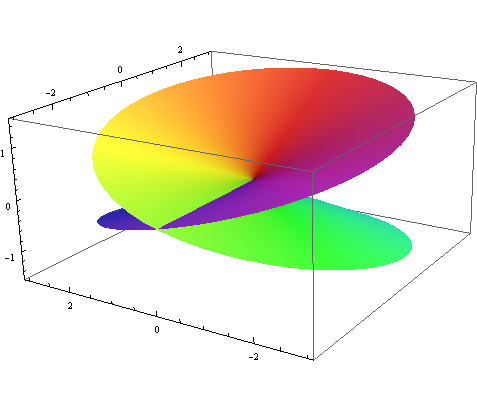
A rational function with one pole of order 1, one pole of order 3, a zero of order 2, and three zeros of order 1.
ComplexGraph[Function[z, (z + 3 + 5I)^2 *
(1/z + I/(z - 5 + 3I)^3)], -10, 10, -10, 10, 200]
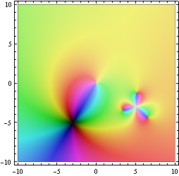
f(z) = e^(1/z) has an essential singularity at z=0. From this picture it is not hard to imagine that the function takes on all non-zero values infinitely often in every neighborhood of 0 (Picard's big theorem):
ComplexGraph[Function[z, Exp[1/z]], -1, 1, -1, 1, 200]
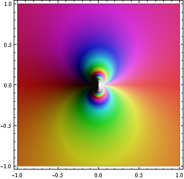
The Riemann ζ-function. Note the pole of order 1 at z=1 and the zeros of order 1 on the negative real axis and on the critical line Re(z)=1/2. The function is pretty boring (close to 1) for Re(z)>1, where it was originally defined.
ComplexGraph[Zeta, -40, 20, -40, 40, 400]
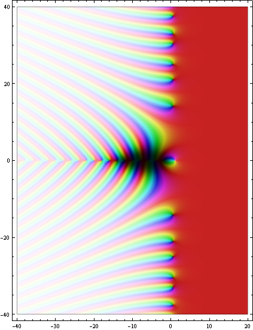
The ζ-function on the critical strip 0<Re(z)<1, with the pole and the first two zeros visible. The zeros have real part 1/2, as they should.
Show[ComplexGraph[Zeta, 0, 1, -1, 23, 200], AspectRatio → 5]
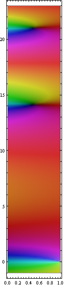
According to Voronin's Universality Theorem, the ζ-function on the strip 1/2<Re(z)<1 approximates every holomorphic function without zeros to arbitrary precision. In other words: the strip shows all possible "analytic" color patterns that don't use black or white. Here's a representative segment of the strip.
Show[ComplexGraph[Zeta, 1/2, 1, 103, 109, 200], AspectRatio → 5]
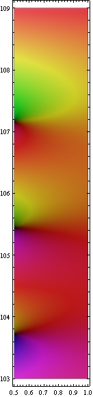
Created December 2007 by Axel Boldt, based on an idea by Jan Homann. All scripts and pictures on this page are in the public domain.